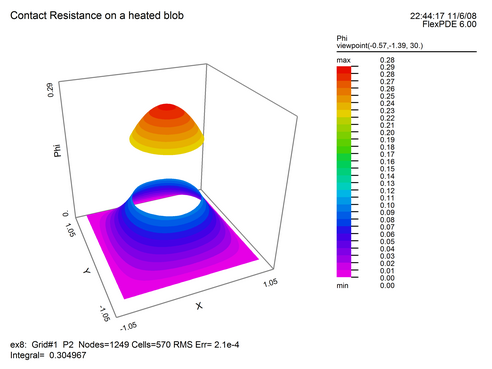

|
Contact Resistance |

  
|
|
Contact Resistance |
|
The problem of contact resistance between two conductors is a typical one requiring discontinuity of the modeled variable.
In this problem, a very thin resistive layer causes a jump in the temperature or voltage on the two sides of an interface. The magnitude of the jump is proportional to the heat flux or electric current flowing across the resistive film. In microscopic analysis, of course, there is a physical extent to the resistive material. But its dimensions are such as to make true modelling of the thickness inconvenient in a finite element simulation.
In the contact resistance case, the heat flux across a resistive interface between materials '1' and '2' as seen from side '1' is given by
F1 = -K1*dn(T) = -(T2-T1)/R
where F1 is the value of the outward heat flux, K1 is the heat conductivity, dn(T) is the outward normal derivative of T, R is the resistance of the interface film, and T1 and T2 are the two values of the temperature at the interface.
As seen from material '2',
F2 = -K2*dn(T) = -(T1-T2)/R = -F1
Here the normal has reversed sign, so that the outflow from '2' is the negative of the outflow from '1', imposing energy conservation.
The Natural Boundary Condition for the heat equation
div(-K*grad(T)) = H
is given by the divergence theorem as
Natural(T) = -K*dn(T),
representing the outward heat flux.
This flux can be related to a discontinuous variable by use of the CONTACT boundary condition in place of the NATURAL.
The FlexPDE expression JUMP(T) is defined as (T2-T1) in material '1' and (T1-T2) in material '2'.
The representation of the contact resistance boundary condition is therefore
CONTACT(T) = -JUMP(T)/R
This statement means the same thing in both of the materials sharing the interface. [Notice that the sign applied to the JUMP reflects the sign of the divergence term.]
We can modify our previous example problem to demonstrate this, by adding a heat source to drive the jump, and cooling the sidewalls. The restated script is:
TITLE 'Contact Resistance on a heated blob'
VARIABLES
Phi { the temperature }
DEFINITIONS
K = 1 { default conductivity }
R = 0.5 { blob radius }
H = 0 { internal heat source }
Res = 0.5 { contact resistance }
EQUATIONS
Div(-k*grad(phi)) = H
BOUNDARIES
REGION 1 'box'
START(-1,-1)
VALUE(Phi)=0 { cold outer walls }
LINE TO (1,-1) TO (1,1) TO (-1,1) TO CLOSE
REGION 2 'blob' { the embedded blob }
H = 1 { heat generation in the blob }
START 'ring' (R,0)
CONTACT(phi) = -JUMP(phi)/Res
ARC(CENTER=0,0) ANGLE=360 TO CLOSE
PLOTS
CONTOUR(Phi)
SURFACE(Phi)
VECTOR(-k*grad(Phi))
ELEVATION(Phi) FROM (0,-1) to (0,1)
ELEVATION(Normal(-k*grad(Phi))) ON 'ring'
END
The surface plot generated by running this problem shows the discontinuity in temperature:

Page url: index.html?contactresistance.html